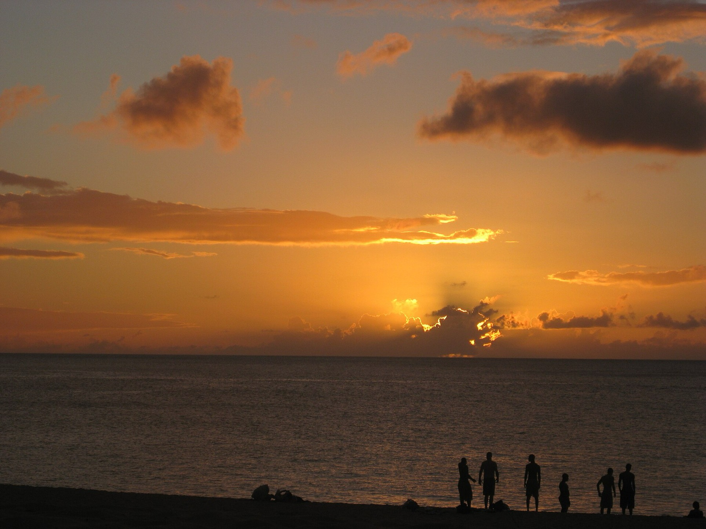
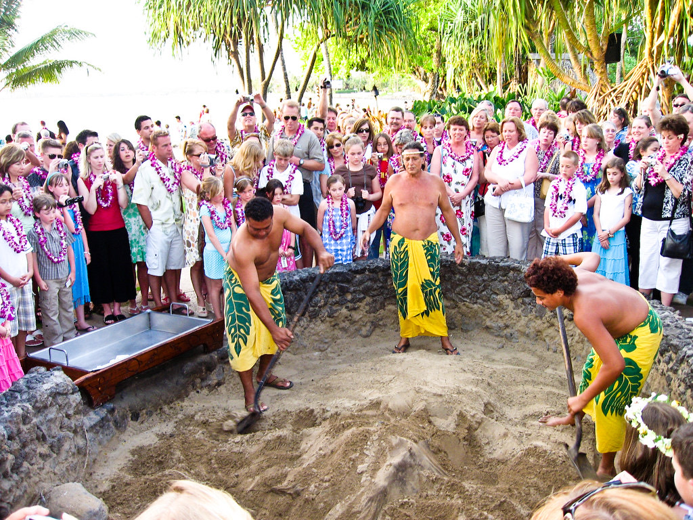
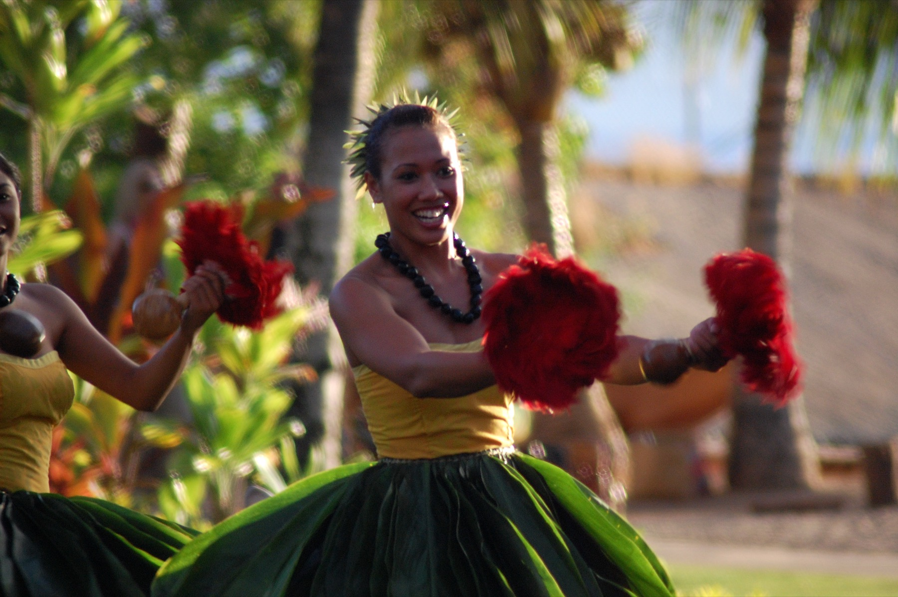
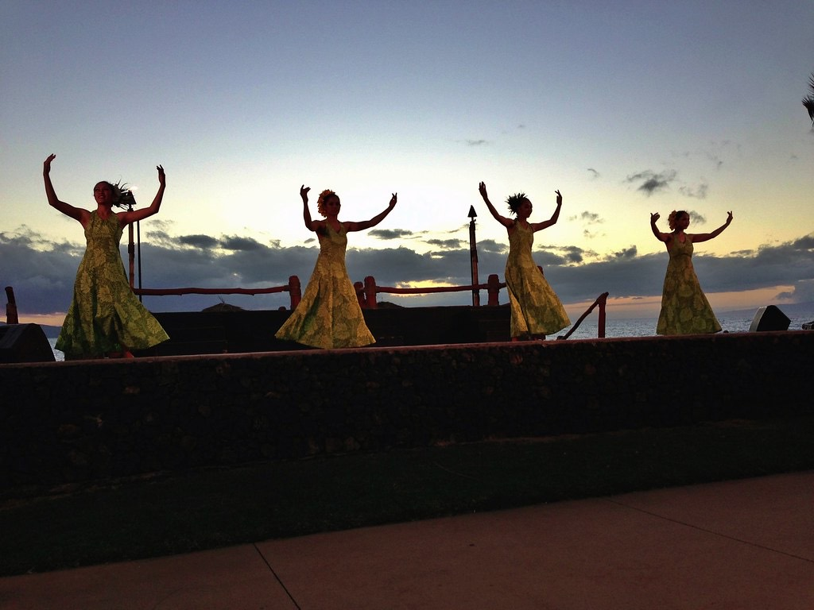
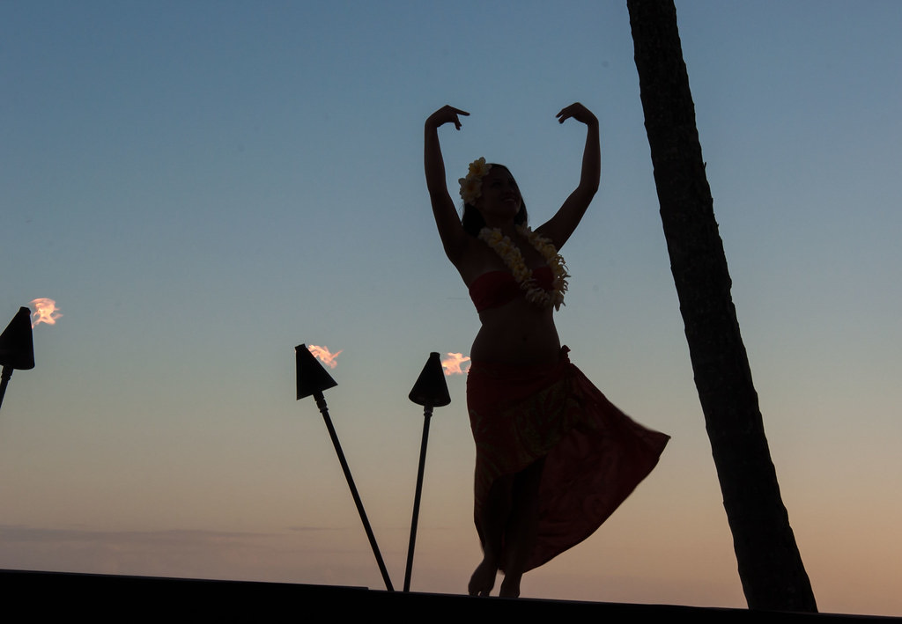

Ke Iki Beach · North Shore Oʻahu
Ke Iki Sunset Lūʻau
October, November and December are sold out · January opens Tuesday, December 1st
What it is
Dinner cooked in the ground, eaten on the sand, facing the sunset.
Ke Iki is a wide, quiet stretch of sand on the North Shore, between Waimea Bay and the Pupukea tide pools. It faces due west, straight into the open ocean, which is why the evening is built around the sunset.
The evening includes a shell lei on arrival, a drink, the opening of the imu, a full Hawaiian buffet at sunset, and a programme of hula and Samoan fire knife once the torches are lit.
It runs once a month and a hundred and fifty seats go with it. For most people it is a once-in-a-lifetime evening, and it is meant to be.
Availability
Sold out.
Dates sold out. January opens on Tuesday, December 1st at 7:00 HST. Each lūʻau has a dress theme, and dressing to it is highly encouraged.
October
Monday 26th
Floral
Dress theme
Prints, lei, a flower behind the ear.
November
Monday 23rd
All white
Dress theme
White or off-white, head to foot.
December
Monday 28th
Mele Kalikimaka
Dress theme
Hawaiian Christmas — red, green and gold.
The evening
A quarter past four, until the torches go out.

Doors
Down the sand path off Ke Iki Road at four. A shell lei, a drink, and your table number on the board at the top of the path.

The imu is opened
Opened in front of the tables at a quarter past four. Children are welcome down the front.

Feast at sunset
The buffet opens at half five, as the light starts to go, and stays open through the sunset. Kālua pig from the imu, poke, poi, sides, a vegan main and dessert.

Hula
Danced on the sand rather than on a stage. Chant first, then strings once the torches are lit.

Fire knife
The Samoan siva afi closes the programme, performed on the sand by the front tables.

Torches down
Coffee and dessert from about eight. There is no set finish time.
Before you come